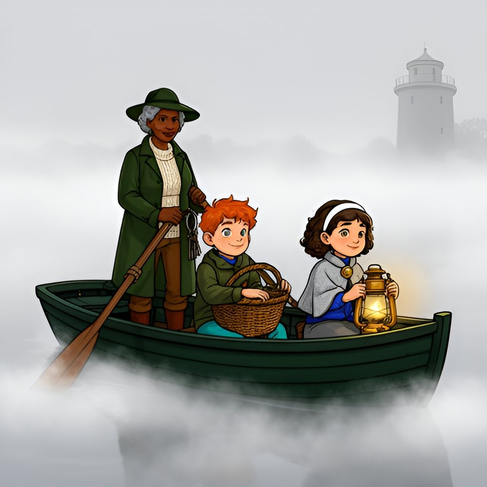

Titistoire › Les Galaxies (8-10 ans)
La barque d'encre
Haute-Lanterne, épisode 1 sur 8 : un feuilleton à énigmes dans un vieux château-phare au milieu d'un lac.

▶ Écouter et regarder l'histoire
Gratuit, sans inscription : la voix lit, le texte suit mot à mot, les images tournent comme dans un album.
Le texte de l'histoire
À Haute-Lanterne, on pouvait très bien mentir. Seulement, on restait dans le noir. Mais ce matin-là, Tom ne pensait pas aux lanternes. Il comptait les pains. « Trente et un, trente-deux… trente-trois ! »
Trente-trois pains ronds dans la corbeille, pour trente-deux élèves. Tom traversait le lac chaque matin avec la barque du pain, et jamais le compte n'avait été faux. « Il y en a un de trop. J'ai compté. — Alors compte les passagers », répondit Zora.
Zora, la passeuse, menait la barque, distribuait les écharpes et ne parlait que pour dire quelque chose. Au bout du ponton, sur une valise, attendait une fille très droite, très bien coiffée. « Bonjour. Je m'appelle Nour. C'est très gentil d'être venus me chercher. »
La barque s'appelait la Luciole. Douze lanternes éteintes pendaient à ses arceaux, dans le brouillard. Zora tendit à la nouvelle une cape grise et une lanterne. « Qui monte dit vrai. Dis une chose vraie, elle s'allume. Sans lumière, je ne traverse pas. »
Tom montra l'exemple. « J'ai faim. » Sa lanterne s'alluma d'un coup. Nour s'éclaircit la voix. « Je suis ravie de venir étudier ici. » Rien. « Ce lac est ravissant. » Rien du tout : on ne voyait même pas le lac. « Nos lanternes se moquent de la politesse, expliqua Tom. Elles veulent du vrai. »
Nour regarda ses souliers. « Je ne voulais pas venir », souffla-t-elle. La flamme jaillit, si claire que le brouillard recula d'un pas. « Voilà une bonne lanterne, approuva Zora. Garde-la sous ta cape. Elle ne craint que deux choses : les mensonges et les courants d'air. »
Au milieu du lac, le brouillard s'ouvrit. Sur un rocher se dressait un château à deux ailes, l'une tournée vers le levant, l'autre vers le couchant, et, entre elles, une tour haute comme un phare. À son sommet brûlait la Grande Lanterne, pâle comme une lune en plein jour. « Dans le temps, on la voyait de la rive », grommela Zora.
« Tout le monde descend, même les menteurs ! » lança-t-elle, comme à chaque arrivée. Sur le ponton du château, quelqu'un dormait, la joue sur un coussin rayé, une écharpe violette sur les yeux. C'était Sami, de corvée de corbeille. « Tadam, souffla-t-il. Je suis venu. » Et il se rendormit. Tom porta la corbeille.
Du ponton à la salle des Horloges, il y avait cent douze marches. Tom les annonça toutes. Là-haut, on prenait le thé et le pain grillé sous un mur entier de pendules et de cadrans, dont pas deux ne donnaient la même heure. « Quelle heure est-il ? demanda Nour. — Laquelle ? » fit Tom.
Un très vieux monsieur descendit d'une échelle, une grosse clé à la main : Maître Idris, qui remontait les horloges. « Elles ont toutes raison, mademoiselle. Chacune donne l'heure de quelque chose. Celle-ci, l'heure de la soupe. La dorée, l'heure du thé. La petite verte, l'heure de ma sieste. »
Tout en haut, un grand cadran bordé de quinze crans ne portait qu'une aiguille. « Celle-là, nul ne sait de quoi elle donne l'heure. C'est l'horloge de personne. Elle n'a jamais bougé. — On dit qu'il y a cent horloges, glissa Tom. J'en trouve quatre-vingt-dix-sept. J'ai compté. — Recompte », sourit Maître Idris.
Par terre, une ligne de cuivre coupait la salle en deux : le Trait. D'un côté, les écharpes jaunes du Levant ; de l'autre, les violettes du Couchant. Un grand garçon en vert se leva. « Règle numéro un : pas d'inconnue à notre table. — Hier, la règle numéro un, c'était de se lever avant le soleil, objecta Tom. — Elles sont toutes numéro un », trancha Elias.
Une fille en orange ouvrit des yeux immenses. « Imagine : c'est une espionne, et dans sa valise il y en a une deuxième, pliée en quatre. — Maya », soupira Elias. Nour n'avait pas d'écharpe : elle n'était de nulle part. Maître Idris posa un tabouret en plein sur le Trait, et elle mangea son pain un coude dans chaque camp.
Ce matin-là, Nour apprit ce qu'on enseignait à Haute-Lanterne : le soin des lanternes, la lecture des heures et l'encre vive. Miss Ada, la directrice, traça un oiseau sur une feuille. L'oiseau s'ébroua, fit le tour de la page et s'arrêta dans un coin. « L'encre vive ne quitte jamais sa feuille. Elle va jusqu'au bord, et elle attend. »
Puis Tom fit visiter. Entre les deux ailes courait un couloir tendu de bleu, avec à chaque bout une porte de bois, pareilles comme deux gouttes d'eau. « Le couloir des jours impairs. Nous sommes le dix-sept : il existe. Demain, tu trouveras un mur. — Et si l'on est dedans à minuit ? — On se réveille dans son lit. Sans ses chaussures, d'après Maya. » Ce couloir-là n'était à aucune aile.
À midi, le soleil tombait droit dans la cour, sur le banc du Trait, que la ligne de cuivre coupait par le milieu. Le matin, ce banc chauffait côté Levant. Le soir, côté Couchant. À midi, il chauffait partout, et c'était la guerre.
Ce midi-là, Sami y dormait en travers, la tête au Levant, les pieds au Couchant. « Tadam. Je garde les deux moitiés. » Tom déplia son mètre de bois. « Sa tête dépasse chez nous de vingt-deux centimètres. J'ai mesuré. — Règle numéro un, déclara Elias : aucune tête du Couchant ne dort au Levant. »
Alors parut une grande fille en rose vif, le menton haut, une clé pendue au cou : Kenza, qui commandait la Tanière, au Couchant. « Voilà la pire injustice depuis trois cents ans. Cette tête a le droit de dormir. Tes règles, elles, n'ont jamais passé le Trait. »
Trois cents ans : c'était l'âge de la fâcherie. Deux amis avaient bâti le pensionnat : Dame Mira, qui dessinait les cartes à l'encre vive, et Maître Tarek, qui fabriquait les lanternes. Un soir, ils s'étaient disputés, chaque aile avait sa version, et Mira avait tracé un trait de craie d'un bout à l'autre du château.
Au Levant, on disait « Dame Mira » et « l'Autre ». Au Couchant, « Maître Tarek » et « l'Autre ». « L'Autre a caché le trésor des fondateurs, affirma Elias. — Faux ! L'Autre a brûlé la carte qui y menait. C'est la plus grande honte depuis… — Trois cents ans, soupira Tom. On sait. » Nour compta deux Autres, et renonça à comprendre.
Dans la salle des Horloges, la pendule de la soupe sonna. Personne ne bougea. Puis tout le monde, sauf Sami, qu'il fallut porter. Levant et Couchant entrèrent côte à côte, sans se regarder. Égalité, comme depuis trois cents ans.
Le Perchoir était la plus haute chambre du Levant : trois lits sous le toit, une fenêtre ronde tournée vers l'est, et, disait-on, l'ancien atelier de Dame Mira. Nour, qui n'était de nulle part, eut le droit d'y monter. Restait à savoir qui descendrait remplir la cruche. Cent quarante-quatre marches. « C'est la barque qui choisit ! » annonça Maya.
Elias décrocha du mur un parchemin jauni et l'étala sur la table. C'était une moitié de carte : un morceau de lac, la moitié d'une tour, et un bord gauche découpé en dents de scie. Sur l'eau dessinée voguait une barque d'encre, pas plus grosse qu'un grain de riz. Elle avançait toute seule.
Chacun posa son bouton sur le parchemin : Elias en haut, Maya en bas, Tom près des dents. La barque tourna sur elle-même, hésita, puis fila droit vers le bord découpé. Elle s'y cogna, le nez contre le bouton de Tom. « Encore moi ! Elle va toujours de ce côté, et de ce côté, c'est toujours moi. »
« La barque a parlé », trancha Elias. Tom prit la cruche et, pour se consoler, compta les dents du parchemin. « Sept. Comme hier. — C'est la carte de quoi ? demanda Nour. — De rien. Imagine : l'autre moitié, une chèvre l'a mangée. » La petite barque poussait toujours contre le bord, comme une mouche contre une vitre.
On frappa. C'était Zora. « Il reste un lit dans tout le château. Il est à la Tanière, et sa fenêtre regarde le soleil se coucher. Ici, personne ne choisit son aile : c'est la fenêtre qui décide. » Tom faillit lâcher la cruche. La nouvelle, celle qu'il avait trouvée lui-même en comptant les pains, était du Couchant.
« Pour l'écharpe, ajouta Zora, je n'ai plus de violet. La prochaine viendra par la barque de la fin du mois. D'ici là, ne t'enrhume pas. — C'est très gentil », répondit Nour. Près de la porte, une lanterne pâlit un peu. Zora ne fit aucune remarque.
Elias croisa les bras. « Règle numéro un : on ne parle pas aux Couchants. — Elle a vu la barque, s'inquiéta Tom. — Elle a vu un vieux parchemin qui désigne les porteurs de cruche. Le beau secret ! » Nour suivit Zora dans l'escalier. Elle n'avait plus un coude dans chaque camp. Elle n'avait même pas d'écharpe.
La Tanière était la plus basse chambre du Couchant : trois lits au ras du lac, une fenêtre tournée vers l'ouest, et, disait-on, l'ancien atelier de Maître Tarek. Sami dormait déjà. Kenza attendait debout, une lanterne allumée à la main. « Te voilà de la Tanière. Tu vas voir le plus grand secret depuis trois cents ans. »
Avec sa clé, elle ouvrit un coffre et déroula un parchemin jauni. C'était une moitié de carte : un morceau de lac, la moitié d'une tour, et un bord droit découpé en dents de scie. Tout contre ce bord, on avait dessiné un petit ponton d'encre, avec sa lanterne éteinte. Rien n'y bougeait. On aurait juré qu'il attendait.
« La carte du trésor. Du moins ce qu'il en reste : l'Autre a brûlé sa moitié. » Nour ne répondit pas. Elle comptait, malgré elle, les creux du bord découpé. Sept. Elle devint toute pâle. Sami ouvrit un œil. « Elle est émue. Tadam. »
Kenza roula le parchemin. « Jure de n'en parler à personne. — Je le jure. » La lanterne ne trembla pas : c'était vrai. « Tu es bien pâle. On croirait que tu en as déjà vu une. » Nour ouvrit la bouche. La petite flamme la regardait. « Je crois que j'ai sommeil. » C'était vrai aussi.
La nuit vint. À Haute-Lanterne, on n'allumait pas la lanterne de son chevet sans une vérité du soir. Les petites suffisaient. Au Perchoir, Tom dit : « Deux cent quatre-vingt-huit marches, aller et retour. » Elias : « Il y a trop de règles numéro un. » Maya : « La chèvre, je l'ai inventée. » Trois lueurs s'allumèrent à la fenêtre ronde du Perchoir.
À la Tanière, Sami bâilla : « Je suis fatigué. » Sa lanterne s'alluma avant la fin de la phrase. Kenza déclara : « Maître Tarek n'était pas un voleur. » La sienne s'alluma, bien droite. Restait la troisième. « Je suis très contente d'être ici », essaya Nour. Rien du tout.
Elle pensa aux sept dents, là-haut, et aux sept creux, ici. Elle avait juré de se taire, et sa lanterne ne lui passerait aucun mensonge. Alors elle chercha une chose vraie qu'elle avait le droit de dire. « Je sais quelque chose que personne d'autre ne sait. » La lanterne s'alluma d'un coup.
Cette nuit-là, la barque d'encre resta le nez contre son bord, et le ponton attendit contre le sien. Que se passerait-il si l'on posait les deux moitiés l'une contre l'autre ? Dans tout le château, une seule personne pouvait se le demander. Elle ne dormait pas. Et dans la salle des Horloges, sans que nul le voie, l'horloge de personne avança d'un cran. Il en restait quatorze.
Épisode suivant : Le couloir des jours impairs